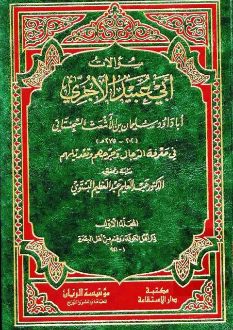

دار الاستقامة
Publisher
Resources
 شرح لمعة الاعتقاد الهادي إلى سبيل الرشاد لموفق الدين بن قدامة المقدسي
شرح لمعة الاعتقاد الهادي إلى سبيل الرشاد لموفق الدين بن قدامة المقدسي
محمد صالح العثيمين
شرح لمعة الاعتقاد الهادي إلى سبيل الرشاد لموفق الدين بن قدامة المقدسي
شرح لمعة الاعتقاد الهادي إلى سبيل الرشاد لموفق الدين بن قدامة المقدسي
محمد صالح العثيمين

سؤالات أبي عبيد الآجري في معرفة الرجال وجرحهم وتعديلهم سؤالات أبي عبيد الآجري في معرفة الرجال وجرحهم وتعديلهم سليمان بن الأشعث السجستاني